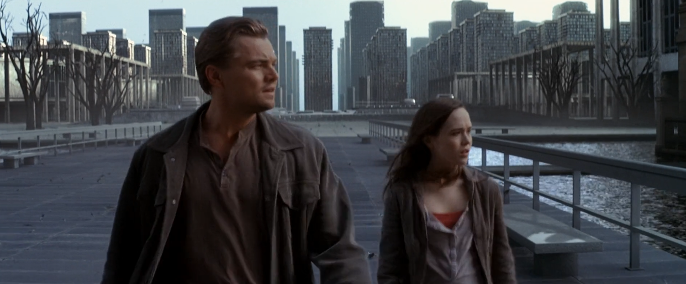
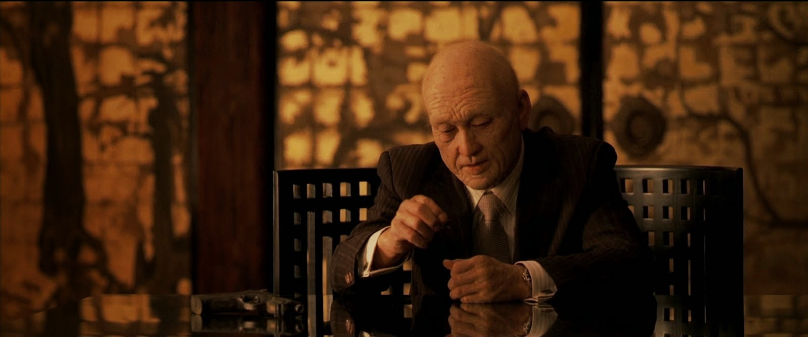
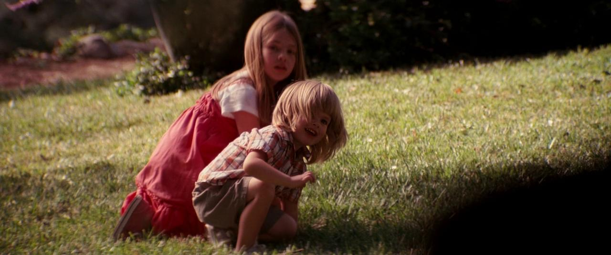

“If we find ourselves with a desire that nothing in this world can satisfy, the most probable explanation is that we were made for another world.” -C.S. Lewis
As our two protagonists emerge from the waves, we finally see the world that Cobb has named “Limbo.” The shooting script for Inception (written by Nolan himself) describes the landscape,
“Cobb and Ariadne climb out of the waves, full speed. They move into the shadow of the tall, crumbling buildings. The streets are eerily deserted. As they move further in, the buildings become newer, different. Ariadne marvels at the extraordinary collection of buildings− every architectural style imaginable in waves of failed utopias.”
Limbo was exactly that- a world of failed utopias. It was the result of decades of architectural expansion as Cobb and Mal etched every one of their dreams into reality. Nothing was off limits to build, as long as it came from their memories. There was infinite time and infinite potential. Even the world itself seemed to have no borders to hold them back. Cobb had everything he ever wanted- companionship with his wife and a blank canvas in front of him … and yet he grew discontent. While at first he tried convincing his wife to leave Limbo, he eventually resorted to inception, tampering with her subconscious. His discontent grew so strong that he was willing to infect his wife with an idea (infection with a true idea- but infection nevertheless) in order to escape Limbo. But as he continued to idolize Mal in the real world, Limbo lived inside him. And when Mal died, the idol of his heart could only be placated by fantasy. He fixed his eyes on shadow, continuing to deny Reality.
C.S. Lewis depicts a similar world to Limbo in his brief novel The Great Divorce. His world he calls “The Grey Town” and he uses it as a description of Hell itself. It is the initial setting of the book, the landing pad for the story’s nameless protagonist. The book picks up following the protagonist as he arrives without explanation in the Grey Town, much like how Cobb and Mal wash up onto the shores of Limbo. The protagonist peers around him and sees only dilapidated shops, deserted homes, and one peculiar bus stop. It is evening, but far enough into dusk that the sun has fallen below the horizon. The only gathering of people that he can see is idling in line at the bus stop, so our protagonist instinctively gets in line and waits. He notices that, one after one, the line shortens as people leave. Soon only a few remain in line. The patience of our protagonist is rewarded as the bus arrives, and he hops on. At once the magical vehicle soars into flight, flying high above the town. It is then that our protagonist turns to a fellow passenger and inquires about the emptiness of the place,
"It seems the deuce of a town," I volunteered, "and that's what I can't understand. The parts of it that I saw were so empty. Was there once a much larger population?" "Not at all," said my neighbour. "The trouble is that they're so quarrelsome. As soon as anyone arrives he settles in some street. Before he's been there twenty-four hours he quarrels with his neighbour. Before the week is over he's quarrelled so badly that he decides to move. Very like he finds the next street empty because all the people there have quarrelled with their neighbours-and moved. So he settles in. If by any chance the street is full, he goes further. But even if he stays, it makes no odds. He's sure to have another quarrel pretty soon and then he'll move on again. Finally he'll move right out to the edge of the town and build a new house. You see, it's easy here. You've only got to think a house and there it is. That's how the town keeps on growing." "Leaving more and more empty streets?" "That's right. And time's sort of odd here. That place where we caught the bus is thousands of miles from the Civic Centre where all the newcomers arrive from earth. All the people you've met were living near the bus stop: but they'd taken centuries-of our time-to get there, by gradual removals." "And what about the earlier arrivals? I mean -there must be people who came from earth to your town even longer ago." "That's right. There are. They've been moving on and on. Getting further apart. They're so far off by now that they could never think of coming to the bus stop at all. Astronomical distances. There's a bit of rising ground near where I live and a chap has a telescope. You can see the lights of the inhabited houses, where those old ones live, millions of miles away. Millions of miles from us and from one another. Every now and then they move further still. That's one of the disappointments. I thought you'd meet interesting historical characters. But you don't: they're too far away."
The Grey Town is infinite because its wanderers never settle down. They are perpetually discontent, driven mad by dissatisfaction, forced to double down on their misery. Their stubborn quarrelsomeness keeps them apart, always searching for a better place. There is nothing preventing them from returning to the bus stop (which we later find to be a step towards salvation), except for their insistence to make a utopia for themselves. In describing the town as such, Lewis posits his theology of Hell.
Hell, in Lewis’ eyes, is the infinite expansion of human desire. It is what happens when God lets us have our own way. It is us spinning our wheels, so to speak, for eternity. As humans, we were made for our Creator. We were made to drink from the well-spring of fellowship with God (Isaiah 55:1-3). He is the one who satisfies our restless desires and brings peace to the frenzy of our ever-shifting hearts. Without the security of his gentle love, we are nomads, tossed about by the waves (James 1:6). We embrace a state of Limbo.
So as Cobb reflects on his time building Limbo, he becomes increasingly convicted of his need to sever his attachment to Mal. There is no joy in his heart or spring to his step as he passes by building after building, all in disarray. The vanity of his dreams unfolds before him, and he sees the shadows for what they are. His eyes are adjusting, straining in the sunlight. As he surveys the ruins of his former life, he commits to dethrone Mal, the idol of his heart.
Of course, he cannot do it alone. Just like how one must force the prisoners of the cave into the sunlight, so Ariadne is forcing Cobb to see Limbo for what it is. She is by his side, keeping him accountable. Her role in helping Cobb escape Limbo is mirrored by her mythological namesake. According to Greek mythology, the Cretan princess Ariadne was instrumental to Theseus’ defeat of the minotaur and eventual escape from the labyrinth. The story goes that the king of Crete, King Minos, constructed a maze so puzzling that no man could find its exit. At the center of this maze he placed a terrifying monster, a minotaur, half-man and half-bull. It was decreed that every 7 years 7 young men and 7 young women would be sacrificed to the minotaur by being thrown into the maze. One year, the hero Theseus was chosen to be one of the sacrifices. Lucky for him, the daughter of King Minos, Ariadne, fell in love with Theseus. Being unable to part with her lover, Ariadne gave Theseus a string that he could use to survive the maze. All he would need to do was unwind the string as he walked through the labyrinth. Once he was able to kill the Minotaur, Theseus could simply follow the string back to the entrance. Without her string, even if Theseus could kill the minotaur, he would have been left wandering the maze, eventually to die of starvation or even insanity. Likewise, without Ariadne, Cobb did not stand a chance to escape Limbo.
As Cobb and Ariadne approach Mal’s lair, he braces himself for what is to come. Although his mind is committed to seek Reality, he still experiences the pain of separating from his old life. Once Cobb sets his eyes on Mal and Mal sees his new-found determination, she launches her appeals. She first attacks Cobb’s intellectual conviction, the belief that he is still sleeping. When she realizes the depth of his commitment to Reality, she instead shifts her appeals to target his base senses saying, “Admit it, Dom. You don't believe in one reality anymore. So choose. Choose your reality like I did. Choose to be here. Choose me.” Mal knows that Cobb intellectually believes that she is an illusion, so she appeals to his emotions. This is what C.S. Lewis describes in the book Mere Christianity as a “blitz on belief.” He explains,
"I am not asking anyone to accept Christianity if his best reasoning tells him that the weight of evidence is against it. That is not the point at which faith comes in. But supposing a man’s reason once decides that the weight of the evidence is for it. I can tell that man what is going to happen to him in the next few weeks. There will come a moment when there is bad news, or he is in trouble, or is living among a lot of other people who do not believe it, and all at once his emotions will rise up and carry out a sort of blitz on his belief. Or else there will come a moment when he wants a woman, or wants to tell a lie, or feels very pleased with himself, or sees a chance of making a little money in some way that is not perfectly fair; some moment, in fact, at which it would be very convenient if Christianity were not true."
Cobb is tempted with the tantalizing possibility of reuniting with Mal in Limbo. Although he has just walked past the ruins of their previous life together, his emotions tell him that- given one more chance- he could finally build the utopia of his dreams. As he hears his wife pleading with him, his emotions rise up in a blitz against his belief. And yet he stands firm. In a powerful moment of faith, he confesses his sin, bringing his failure of incepting Mal into the light and letting her go once for all. As she lurches at Cobb to kill him, Ariadne shoots her and she falls to the ground.
With the dread of Mal out of mind, Cobb is changed. At this point he wants nothing more than to be with his children, but he first needs to rescue Saito. He remembers that by now Saito has died of his wound and has descended into his own Limbo. Having eyes now adjusted to the light, he seeks to go down into the cave that he came from in order to rescue his fellow dreamer. It is now Cobb’s responsibility to bring Saito into the light. Just as Ariadne accompanies Cobb on his quest to confront Mal, so does Cobb lead Saito out of his Limbo, representing an action of evangelism. Cobb’s heart to rescue the lost speaks of 1 John 1:3, “That which we have seen and heard we proclaim also to you, so that you too may have fellowship with us; and indeed our fellowship is with the Father and with his Son Jesus Christ.” Cobb has “seen and heard” of the joys of Reality, a place free of stale memories and frenzied discontent. A place where his children are waiting for him. And so, with the “radical notion” of Reality written on his heart, he desires to see Saito also experience the joy he now has. While the other members of his team ride the kick up to the first level of the dream and escape the submerged van, Cobb drowns and thus joins Saito’s Limbo.
Awaking on Saito’s shore, Cobb is dazed and exhausted. The dilation of time has taken a toll on his mind, and he appears to have already lost his faith in Reality. To him, all that he had experienced had become a “half-remembered dream.” Saito’s projections find Cobb face-down on the shore and bring him before Saito for questioning. By now Saito has become an old man. Yet he still holds hope that Cobb will return for him. The guards empty Cobb’s pockets to find a gun and a top. As Cobb and Saito stare at each other from opposite ends of the table, they look to the top. Saito explains that he is waiting for someone, and doesn’t recognize Cobb at first. Cobb himself seems to have forgotten why he is there, but as his eyes drift towards the top, he notices that, as it spins, it never falls. His top reminds him why he has come for Saito; it grounds him in his faith. Cobb’s top represents the perseverance of the saints. Romans 11:29 declares, “The gifts and the calling of God are irrevocable.” Despite Cobb’s forgetfulness, his top always stays with him. It is his assurance, his seal. It is what gives him the strength to deliver the good news to Saito, the news that there is a world out there beyond what either of them can imagine or create from memory. A world of newness.
So as Cobb wakes to Reality, he wakes with a changed heart and full exoneration. He has finally come home. He grabs his kids with a tight embrace and savors the newness of Reality. His top spins on the table, but he doesn’t need it anymore. His faith has become sight.
As the final chords of “Time” fade into silence, we are left with a note of ambiguity. Is Cobb dreaming? The Gospel message at the heart of Inception makes it clear that the proper question should be directed towards ourselves. Are you still dreaming?
